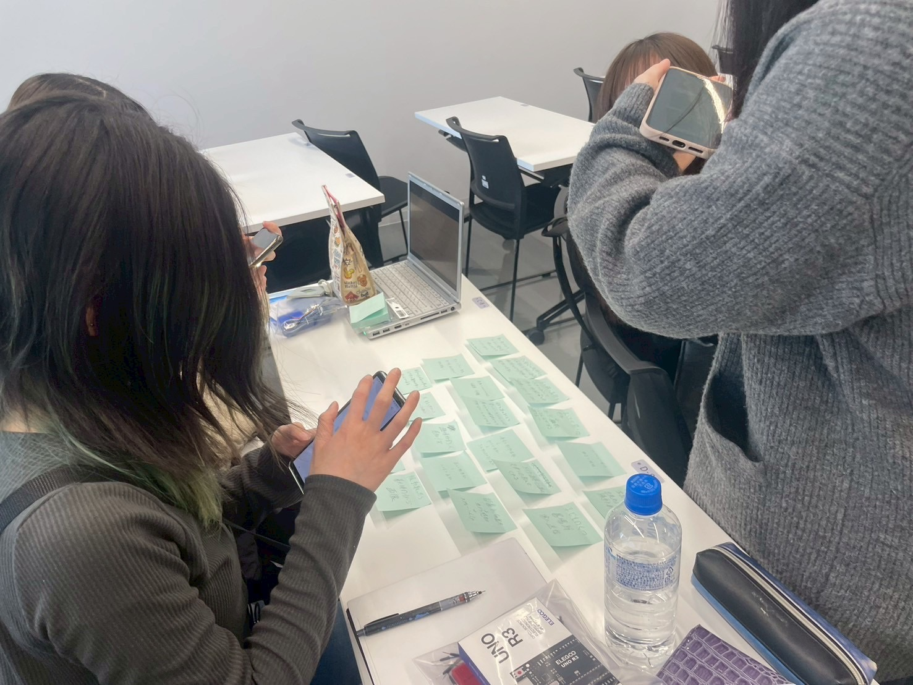

<!DOCTYPE html>
<html lang="jp"></html>
<head>
    <title>Tha 1st class</title>
</head>
<body>
    <h1>IOTについて</h1>
    <h2>IoTとは何か</h2>
    <h3>IoT（Internet of Things）</h3>
    <div>モノ（家電や車、建物など）をインターネットに接続する技術の総称で</div>
    <div>産業用機器から自動車、家電製品まで、さまざまな「モノ」をつなげることができます</div>
    <h2>実験した動画(Youtube)</h2>
    <h2>IoT(遠隔操作)で何ができそうか？グループワークした内容</h2>
    <br>
    <br>
    <h3>かごとスマホをリンクさせ、合計金額と好みの検索</h3>
    <div>↑かごについてあるQRコードを読み取ると、かごに入っている商品の合計金額と</div>
    <div>事前に登録してある好みを、認識しかごに入っている商品と会う組み合わせを</div>
    <div>自動的に検索し、場所を誘導してくれる。</div>
    <div>＋上限の金額を設定しとおくと、上回った時に、スマホにお知らせしてくれる。</div>
    <h2>IoT(遠隔操作)で何ができそうか？自分で考えたアイディア</h2>
    <h3>圧力鍋を遠隔操作？</h3>
    <div>今、具材を入れておくと、スイッチを押すだけで料理を作ってくれる、家電製品があると思うんですが</div>
    <div>それに機能を追加して、事前に材料を入れて置き、帰る時間帯に遠隔でスイッチを押すと</div>
    <div>自動的に料理を作ってくれて、出来立てが食べれるというもの！</div>
    <div>帰るのが遅い人にとっては、ありがたい商品だと思いました。</div>
